Academic Projects
and Publications
Developer behind every project listed below. Either co-authored or credited in acknowledgements.
Used C# programming in Unity for VR and Android platforms, created and managed 2D and 3D assets, audio design, multiplayer networking, and testing.
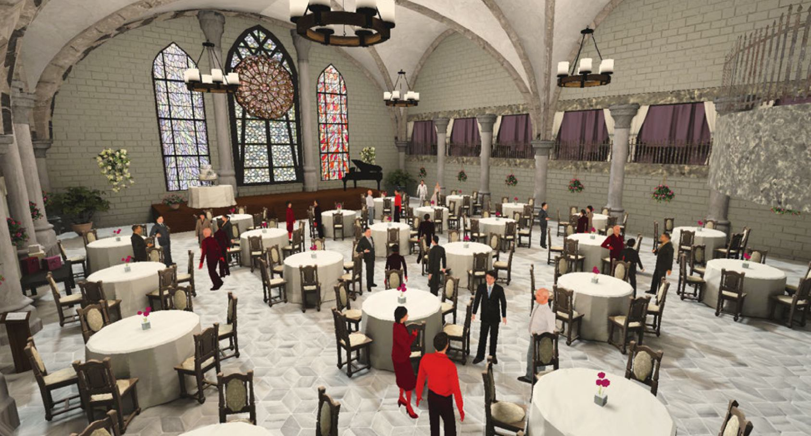
Demographic and Behavioral Correlates of Cybersickness A Large Lab-in-the-Field Study of 837 Participants
An immersive VR experience which gamifies viral transmissions and protection thereof through herd immunity.
Primary developer. Also responsible for art direction, soundtrack, writing and narrative composition, game design and game balance.
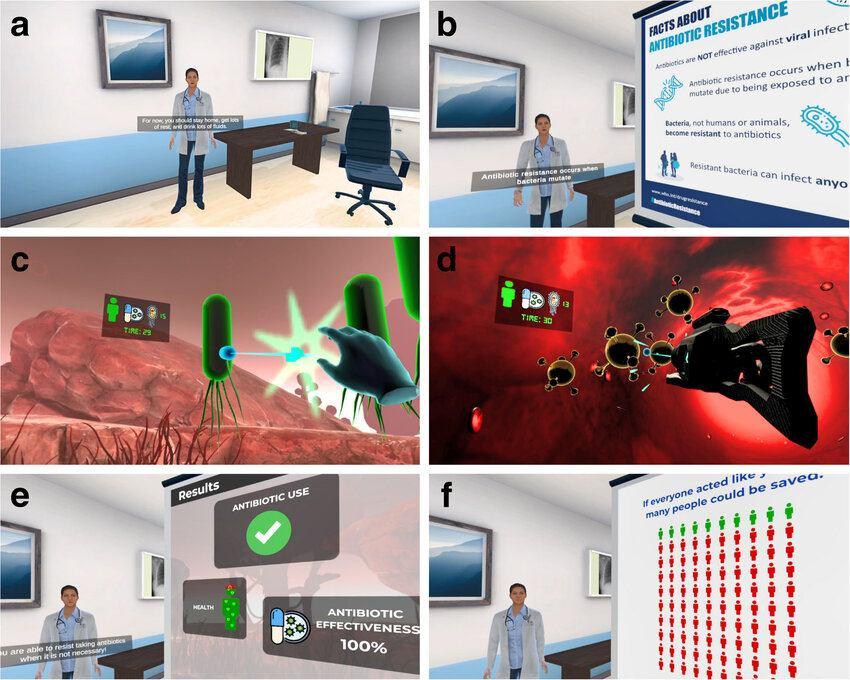
A randomized controlled trial investigating experiential virtual reality communication on prudent antibiotic use
VR game about antibiotic resistance, where players embody the immune system to fight off deadly bacterial infections.
Solo developer. Also responsible for art direction, UI and graphic design, gameplay systems and game balance.
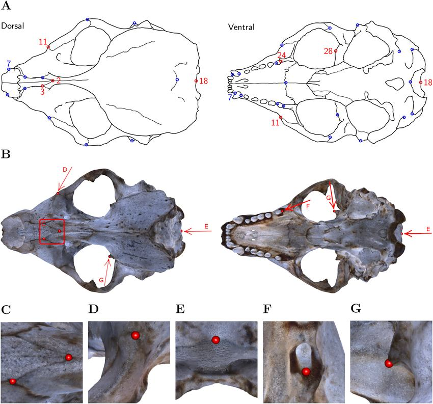
Using virtual reality for anatomical landmark annotation in geometric morphometrics
A tool for biological annotation of 3D-scanned seal skulls in VR.
Solo developer. Doubled as M.Sc. thesis in Digital Media Engineering under supervision of professors in computer graphics.
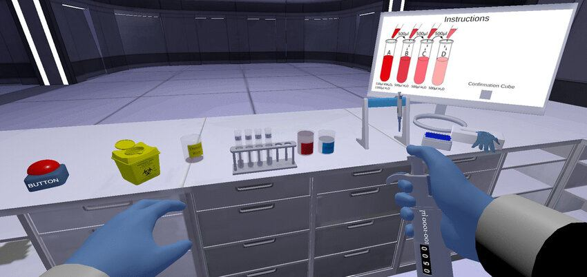
Does Embodiment in Virtual Reality Boost Learning Transfer
A VR learning experience about proper lab procedures regarding using micropipettes.
Secondary developer.
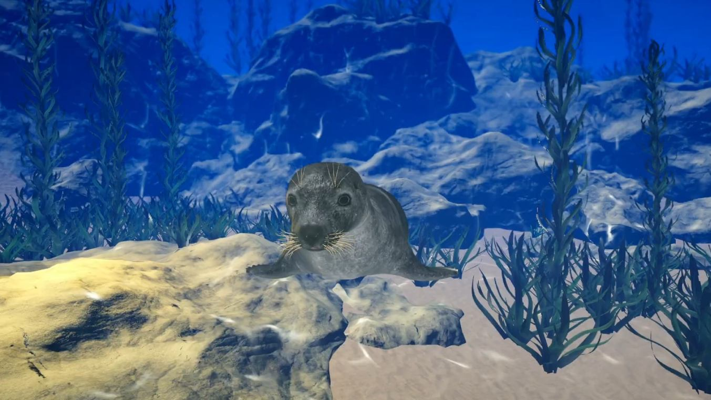
OceanSpeak - Immersive Conversations with an AI Virtual Seal for Enhancing Ocean Literacy
A virtual reality experience that improves ocean literacy through interaction with an AI seal living in the Swedish marine ecosystem.
Publication not out yet.
Solo developer.
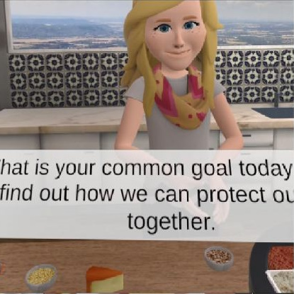
Promoting collective climate action and identification with environmentalists through social interaction and visual feedback in virtual reality
A multiplayer VR experience in which two players cook a dish together, aiming for balanced nutritional values.
Solo developer. Used LAN networking in combination with VR.
(This contribution does not reflect personal or political opinions about environmental issues.)
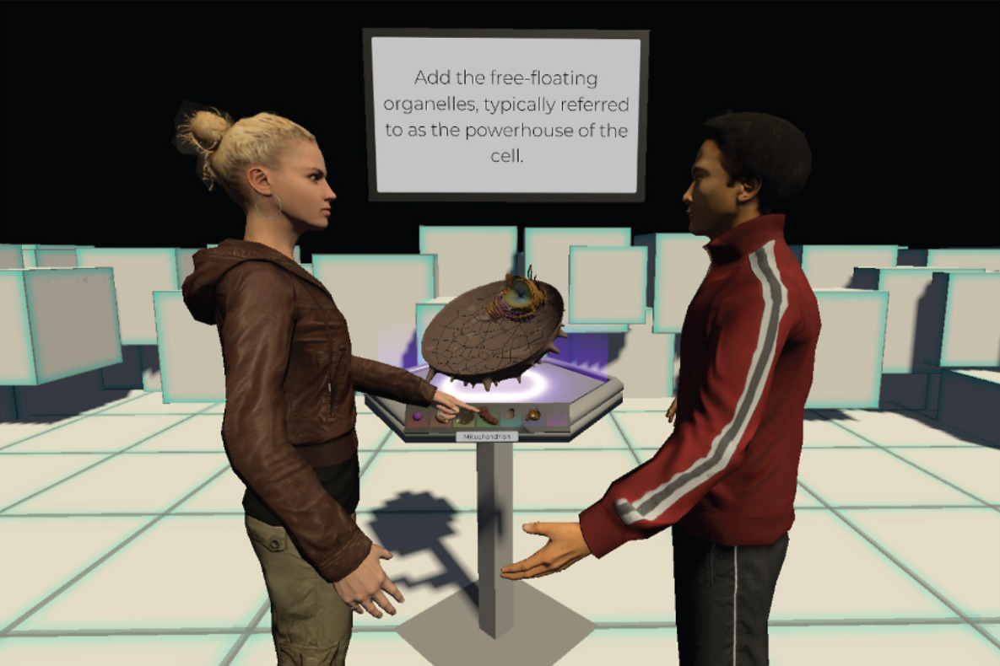
Collaborative generative learning activities in immersive virtual reality increase learning
A multiplayer VR experience in which two players travel through the human body and construct a cell as a learning task.
Solo developer. Implemented LAN networking in combination with VR.
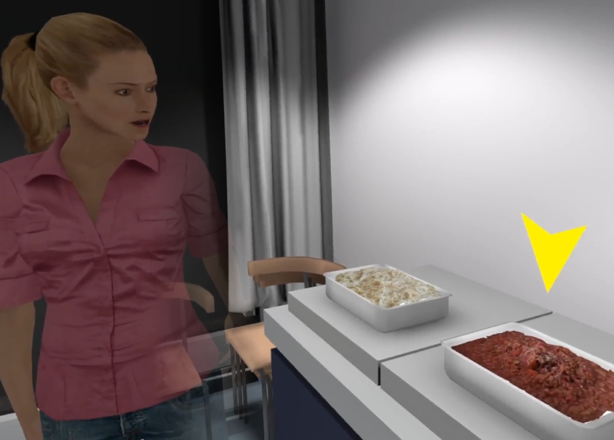
Shifting from Information- to Experience-Based Climate Change Communication Increases Pro-Environmental Behavior Via Efficacy Beliefs
An immersive VR experience about meat consumption and CO2-output.
Solo developer. Recreated a real-life laboratory in VR, and used photogrammetry to recreate high-fidelity 3D models of dishes.
(This contribution does not reflect personal or political opinions about environmental issues.)
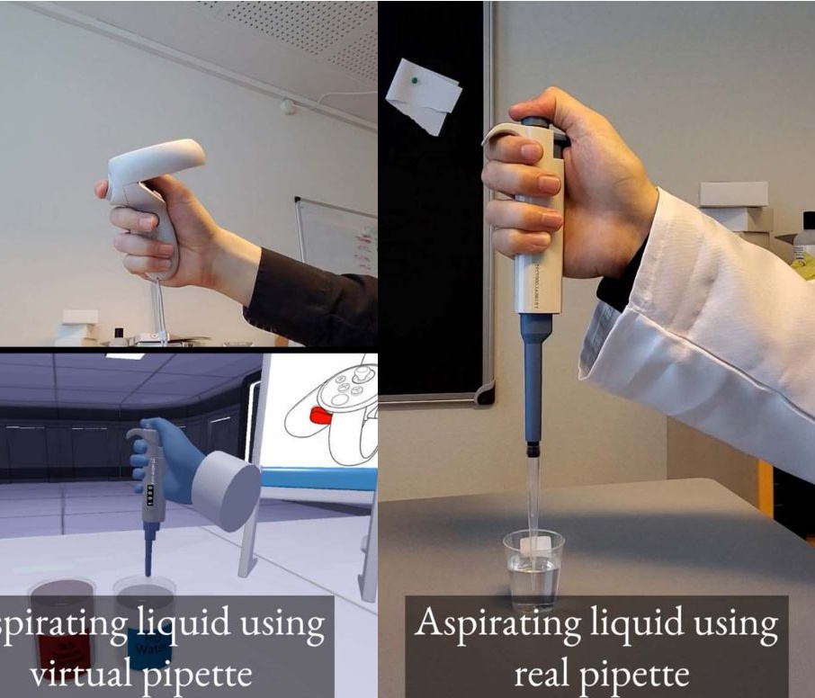
Pipetting in Virtual Reality Can Predict Real-Life Pipetting Performance
A VR learning experience about proper lab procedures regarding using micropipettes.
Secondary developer.
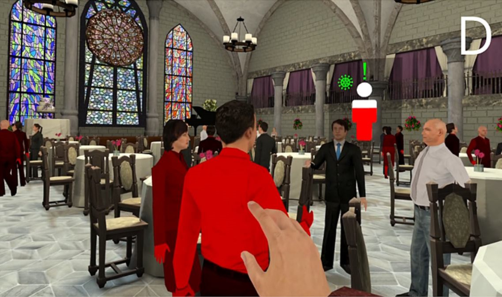
Experiencing herd immunity in virtual reality increases COVID-19 vaccination intention
An immersive VR experience which gamifies viral transmissions and protection thereof through herd immunity.
Primary developer. Also responsible for art direction, soundtrack, writing and narrative composition, game design and game balance.
(This contribution does not reflect personal or political opinions about COVID-19, vaccines or otherwise.)
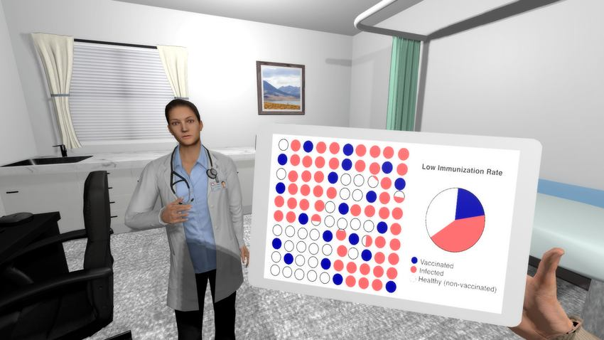
A self-administered virtual reality intervention increases COVID-19 vaccination intention
An educational VR experience about viral transmission and herd immunity. Primary developer.
(This project does not reflect personal or political opinions about COVID-19, vaccines or otherwise.)
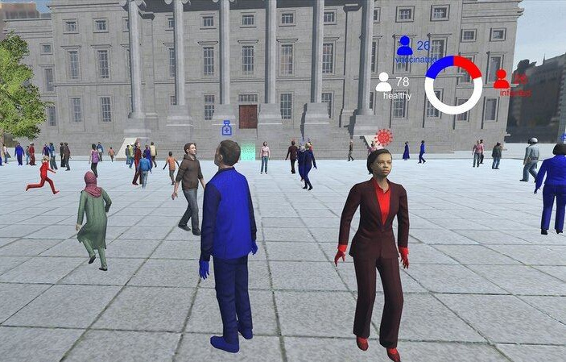
Virtual reality reduces COVID-19 vaccine hesitancy in the wild
Secondary developer and technical support at field study.
This project received media coverage by Reuters, Yahoo,
TV2 Lorry (local television), and Copenhagen University.
(This project does not reflect personal or political opinions about COVID-19, vaccines or otherwise.)
Certifications & GitHub
Certifications and other non-game projects.

Microsoft Certified:
Azure Fundamentals
Demonstrated foundational knowledge of cloud computing concepts, core Azure services, plus Azure management and governance features and tools.

Full-stack C# ASP.NET, Blazor & Azure Project
A demonstration of full-stack development. Uses C# and ASP.NET for back-end, Blazor for front-end, hosted in Microsoft Azure and uses a SQL Server as database.
Solo developer.

Ranked #2 in AI & Multi-Agent System Competition
In the course AI & Multi-Agent Systems (02285) at the Technical University of Denmark (DTU), this C# project reached second-place out of 26 contestants in 2019.
Secondary developer.

TypeScript + React: 3D Model Render in Browser
A webapp hosted on GitHub Pages showcasing a 3D model with colour customization. Written in TypeScript & React Three Fiber.
Solo developer.
Video Games
Independent game development:
C# programming, visual/audio design,
digital illustration and music production.
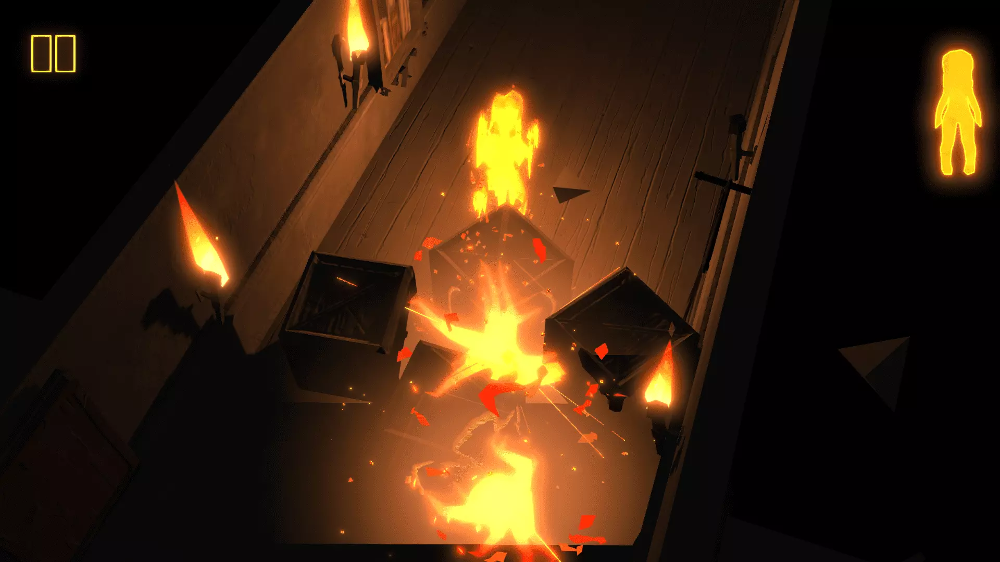
To Ashes
The mysterious adventure of a girl made of fire, burning through her
parents’ sinister mansion. Dash through levels filled with deranged
monuments, cryptic challenges and remnants of the girl’s cheerless past.
To flee the estate, you must sidestep traps, uncover secret passages
and avoid forever turning to ashes.
Lead programmer role in team of 16 developers. Written in C#/Unity.
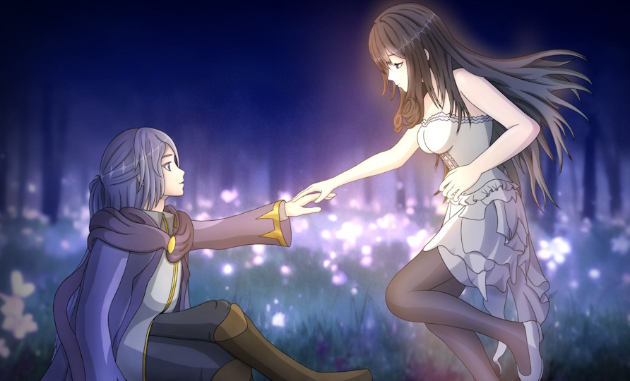
A Fantasy Renaissance
A gothic visual novel in development since December 2014. All its character art, music compositions, writing and programming is hand-crafted by a single creator.
Yes, I drew the illustration.

Sega Mega Drive Prototype (16-bit game)
A game prototype running on the Sega Mega Drive (1989). Created with test-driven development in C using the SDGK library.
Solo developer. All visuals and audio are original assets by me.
The game is a third-person action arcade game with various AI difficulties.
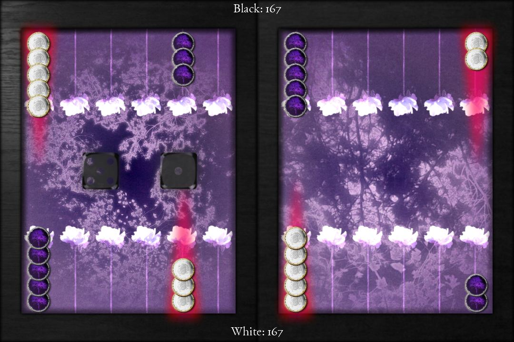
Backgammon
Created with test-driven development, the unit-tested game logic ensures a correct implementation of all Backgammon rules, with the interface provided by the MonoGame engine in C#.
Front-end developer. A two-man project; all visuals and audio are original assets by me.
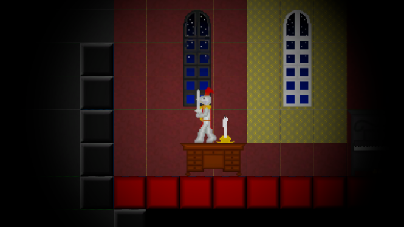
Gift of Vision
In Gift of Vision, visibility is your limiting factor. With obstacles divided into two planes - the physical
plane with the interior and its traps, and the spiritual plane with ghosts and monsters - can you explore the castle? Whilst always affected by both planes simultaneously, you only see one plane at once.
Lead developer in a three-man group. All visuals and audio are original assets by me. Responsible for game direction and level design.

Michael Atchapero
M.Sc. in Digital Media Engineering
B.Sc. in Software Engineering
Specializes in C# programming, independent game development, digital illustration and audio production.
Transitioning into full-stack web development with C#, ASP.NET and Microsoft Azure.